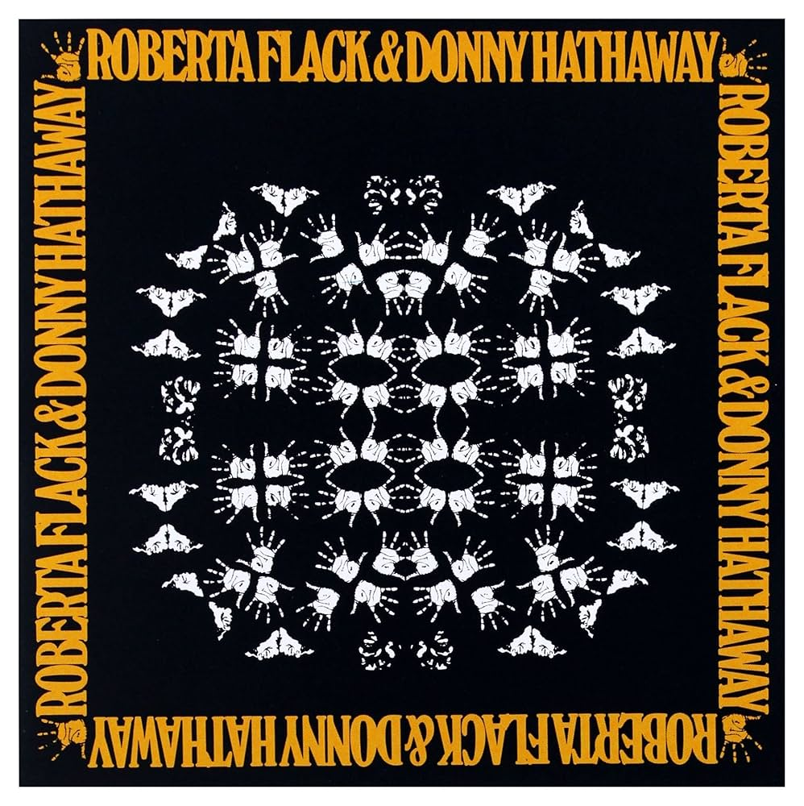

Music is my most important and prominent feature. I am consumed by the endless facets it can entail. As 2026 accelerates through our lives, I intend to carve out time for discovering new music by discovering an album every day of the year. Here's what I have been into lately:
Album of the Week
I am a huge fan of Roberta Flack. She has an amazing range that pairs with the soul illuminating verve of her music. Coupled with Donny Hathaway, their harmonies sound like two planets intercolliding and spiraling into orbit with one other. Each song earns it's spot in this love entangled, no skips album. I came across this first song, hell of a starter. My soul aches for the story and reverberation of their voices. Sharing the wealth:
Song of the Week
The ever promised snow has kept me good company. Of course, I find it necessary to listen to deemed winter hymns as I lay interlocked with my bed and Salem for the third day in a row. Bob Dylan in the winter time must be fit for the lazy days. I give you Winterlude from the comfort of my bed to yours:
At the moment, I am also into Nina Simone, Cameron Winter, Joni Mitchell, and any Pink Floyd song that whines a gorgeous guitar riff. I am always seeking recommendations, so please feel free to send any my way.
Press my sweet hover button to check out more.